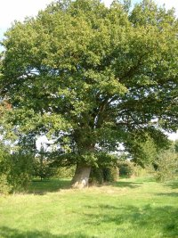

La Ferme de La Godinière
27410
Le Noyer en Ouche
Tel : 02.32.44.46.71
dernière mise à jour de cette page : 26.06.2022
Notre adresse web :
https://lagodiniere27.github.io/
|
 |
Annie et
René LESUR
vous accueillent toute l'année
pour
vous proposer
la dégustation gratuite
et la vente de leurs produits :
Cidre
Fermier de Normandie
Calvados
AOC Cru du Pays de la Risle
Vinaigre de
Cidre
"Le
Godinier" Apéritif
Jus de Pomme Pasteurisé
(sans alcool)
|
Situation Géographique
:
FRANCE - NORMANDIE - EURE
Pays Risle - Charentonne
Arrondissement de Bernay
Canton de Beaumesnil
Sur la Route
Départementale 140 – au Km 32 –
La Godinière : Latitude N 49° 0' 35' 83" - Longitude E 0° 43' 28" -
Au cœur du Pays
d'Ouche,
Entre Conches et Bernay,
à 1
Km du Château de Beaumesnil
Pour trouver une adresse GPS
:
http://www.torop.net/coordonnees-gps.php
|
 |
|
Chêne séculaire de la
Godinière |
|
Nos avons la joie de
vous annoncer la parution de :
ARBRES REMARQUABLES
de Haute Normandie de Annick Vallée
dans lequel notre Chêne est en bonne place
|
Carte de l'Eure -
situation de La Godinière : cliquez
Horaires
d'ouverture :
|
ATTENTION :
Il faut considérer que la rédaction de ces pages
est à conjuguer au passé, nous avons arrêté la
fabrication pour raison de retraite... et oui, le temps passe...
|
Octobre 2018, nous avons le regret de
vous informer de l'épuisement de nos stocks...
Nous garderons néanmoins un
excellent souvenir de notre clientèle que nous ne remercierons jamais assez de
sa
fidélité.
|
L'annuaire Pages Jaunes ayant pris note de la cessation d'activité a supprimé
notre numéro de téléphone
avec la mention fermé définitivement, et nous ne figurons même plus sur les pages
blanches, le numéro est toujours fonctionnel.
Tél : 02.32.44.46.71 (Répondeur en cas d'absence)
Nous accueillons TOUJOURS les Camping-Cars.
Renseignements : cliquez
René et Annie Lesur.
|
|
|
Tous nos locaux et installations sont
protégés par Nexecur anciennement
CT.CAM. filiale sécurité du GROUPE CREDIT AGRICOLE
Transmission par GSM
A l’écoute de votre sécurité, les Centres de Télésurveillance du Crédit
Agricole sont heureux de mettre à votre service une expertise unique de la
sécurité acquise depuis 20 ans.
CONTACT DIRECT : N° Azur : 0 810
712 339
|
Description de l'exploitation.
Durant
plus d'un quart de siècle, la Ferme de La Godinière s'est consacrée
exclusivement à la production de pommes à cidre sur une superficie de
11 Hectares.
Historique, comment faisons-nous?
(à conjuguer au passé....)
La
Production de Pommes à Cidre.
Le verger est planté sur 8 hectares en
pommiers de basse tige, le reste est en pré-verger traditionnel planté avec
des arbres de haute tige (plein vent), soit 3 hectares.
La Fabrication du Cidre
Nous effectuons sur place, à la ferme, la transformation de la quantité
nécessaire de fruits pour l’élaboration de notre Cidre Fermier destiné à être mis en bouteilles pour la
consommation ainsi que celui destiné à la distillation pour obtenir le Calvados
AOC, cru du Pays de la Risle.
Les pommes en surplus vont à l’industrie.
Le Cidre destiné à la fabrication du Calvados est distillé sur place, à la Ferme
par un bouilleur
de cru ambulant.
Le Calvados
vieillira de longues années en fûts de chêne. On surveille l'évolution des
arômes en dégustant au chai.....mais sans jamais dépasser....."la part des
anges".....
Le Godinier.
Apéritif obtenu par mutage du moût de pommes à cidre avec du Calvados. Le mélange
vieillira
trois ans minimum en fûts de chêne afin de lui permettre de développer ses meilleurs
arômes.
L' Cid' Aig.
Stade ultime de la transformation de la pomme à cidre à La Ferme de La
Godinière. Ce condiment résultant de la fermentation acétique du Cidre
accompagnera vos salades et préparations culinaires.
Le Jus de Pomme.
Notre Jus de Pomme Pasteurisé fera la boisson préférée des enfants
et de tous ceux qui ne prisent pas les boissons fermentées ou qui ne consomment aucune boisson alcoolisée.
Néanmoins, il peut être consommé
également en cocktails sans alcool bien sûr, mais également dans tous les
autres genre.
info légale : l'abus d'alcool peut
nuire à la santé, consommer avec modération.
Interdit pour la femme enceinte qui risque des dommages pour le fœtus.
Consultez le Calendrier des
manifestations
Les petites annonces de la
Godinière : cliquez
Ecrivez nous pour donner votre impression et votre suggestion,
merci.
Pour nous écrire : cliquez
Ma messagerie est protégée par Avast
Conception et Réalisation : René Lesur
Siret : 389
996 067 000 10 - APE : 013Z
TVA : FR 15
389 996 067 00010 -
EA : FR 000 137 E 0066